A01 landing
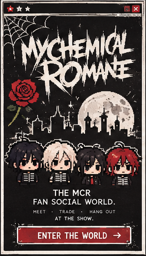

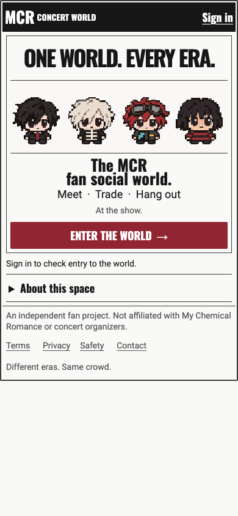
Candidate 65b70a1e8cdd1d9a406b89efa9e10b77df5a2f93 · 206 capture cases · 156.0.8078.80 · DESKTOP_CHROME_TOUCH_VIEWPORTS_ONLY
| Family | Scope | Case verdicts |
|---|---|---|
| PI01 | Shared tokens, frame, fields, tabs, buttons, dialogs, statuses | NOT_REACHABLE: 3 · PASS: 2 |
| PI02 | Feed, authors, media/text-only cards, notices, reaction row, toolbar | PASS: 9 |
| PI03 | Thread, inline replies, composers, edit/delete states | PASS: 12 |
| PI04 | Giveaway discovery/detail/own activity, authoring, reservation, pickup | NOT_REACHABLE: 21 |
| PI05 | Meet discovery, applications, create/manage/rally, People, introductions | NOT_REACHABLE: 18 · PASS: 6 |
| PI06 | Own/public Profile, profile edit, activity and preferences | PASS: 12 |
| PI07 | Portrait framing, avatar popover, complete avatar-editor controls | PASS: 3 |
| PI08 | World HUD, viewport/context strip, six-tab navigation, eras | PASS: 15 |
| PI09 | Working Wall B editor/palette/tools/confirmation, sync, degraded states | NOT_REACHABLE: 6 |
| PI10 | Landing, sign-in/signup/verification/reset/callback/legal/deleted | PASS: 12 · NOT_REACHABLE: 12 |
| PI11 | Map/place/rooms/nearby/check-in/help presentation | NOT_REACHABLE: 9 · PASS: 9 |
| PI12 | Social/privacy/settings links, inbox, reports, recovery, operations, archive | NOT_REACHABLE: 42 · PASS: 15 |
61 retained entries mapped; M10, R02 and X02 are the optional P1 rows outside the required 61.
| IA | Route | Verdicts 360/390/430 | Blocking producer |
|---|---|---|---|
| A01 | / | 360:PASS 390:PASS 430:PASS | |
| A02 | /login | 360:PASS 390:PASS 430:PASS | |
| A03 | /signup | 360:NOT_REACHABLE 390:NOT_REACHABLE 430:NOT_REACHABLE | email signup/verification provider not composed in this fixture |
| A04 | /verify-email | 360:NOT_REACHABLE 390:NOT_REACHABLE 430:NOT_REACHABLE | email signup/verification provider not composed in this fixture |
| A05 | /reset-password | 360:PASS 390:PASS 430:PASS | |
| A06 | /auth/callback | 360:NOT_REACHABLE 390:NOT_REACHABLE 430:NOT_REACHABLE | OAuth provider sign-in not composed in this fixture |
| A07 | /legal/privacy | 360:NOT_REACHABLE 390:NOT_REACHABLE 430:NOT_REACHABLE | approved legal document copy not supplied |
| A08 | /account/deleted | 360:PASS 390:PASS 430:PASS | |
| F01 | /feed | 360:PASS 390:PASS 430:PASS | |
| F02 | /feed/new | 360:PASS 390:PASS 430:PASS | |
| F03 | /feed/00000000-0000-4000-8000-00000000003c | 360:PASS 390:PASS 430:PASS | |
| F04 | /feed/00000000-0000-4000-8000-0000000000aa/edit | 360:PASS 390:PASS 430:PASS | |
| F05 | /notices/00000000-0000-4000-8000-000000000060 | 360:PASS 390:PASS 430:PASS | |
| G01 | /gifts | 360:NOT_REACHABLE 390:NOT_REACHABLE 430:NOT_REACHABLE | community clock/entry authority not composed; gift and party data cannot be admitted |
| G02 | /gifts/new | 360:NOT_REACHABLE 390:NOT_REACHABLE 430:NOT_REACHABLE | community entry release/clock authority not composed (no VITE_MCR_COMMUNITY_CLOCK_INPUT qualification) |
| G03 | /gifts/00000000-0000-4000-8000-000000000005 | 360:NOT_REACHABLE 390:NOT_REACHABLE 430:NOT_REACHABLE | community clock/entry authority not composed; gift and party data cannot be admitted |
| G04 | /gifts/00000000-0000-4000-8000-000000000005/manage | 360:NOT_REACHABLE 390:NOT_REACHABLE 430:NOT_REACHABLE | community entry release/clock authority not composed (no VITE_MCR_COMMUNITY_CLOCK_INPUT qualification) |
| G05 | /gifts/00000000-0000-4000-8000-000000000005/reservation | 360:NOT_REACHABLE 390:NOT_REACHABLE 430:NOT_REACHABLE | community entry release/clock authority not composed (no VITE_MCR_COMMUNITY_CLOCK_INPUT qualification) |
| G06 | /gifts/pickups/00000000-0000-4000-8000-000000000041 | 360:NOT_REACHABLE 390:NOT_REACHABLE 430:NOT_REACHABLE | community entry release/clock authority not composed (no VITE_MCR_COMMUNITY_CLOCK_INPUT qualification) |
| G07 | /gifts/mine | 360:NOT_REACHABLE 390:NOT_REACHABLE 430:NOT_REACHABLE | community clock/entry authority not composed; gift and party data cannot be admitted |
| M01 | /meet | 360:NOT_REACHABLE 390:NOT_REACHABLE 430:NOT_REACHABLE | community clock/entry authority not composed; gift and party data cannot be admitted |
| M02 | /meet/parties/new | 360:NOT_REACHABLE 390:NOT_REACHABLE 430:NOT_REACHABLE | community entry release/clock authority not composed (no VITE_MCR_COMMUNITY_CLOCK_INPUT qualification) |
| M03 | /meet/parties/00000000-0000-4000-8000-000000000010 | 360:NOT_REACHABLE 390:NOT_REACHABLE 430:NOT_REACHABLE | community clock/entry authority not composed; gift and party data cannot be admitted |
| M04 | /meet/parties/00000000-0000-4000-8000-000000000010/manage | 360:NOT_REACHABLE 390:NOT_REACHABLE 430:NOT_REACHABLE | community entry release/clock authority not composed (no VITE_MCR_COMMUNITY_CLOCK_INPUT qualification) |
| M05 | /meet/parties/00000000-0000-4000-8000-000000000010/rally | 360:NOT_REACHABLE 390:NOT_REACHABLE 430:NOT_REACHABLE | community entry release/clock authority not composed (no VITE_MCR_COMMUNITY_CLOCK_INPUT qualification) |
| M06 | /meet/beacons/00000000-0000-4000-8000-000000000070 | 360:NOT_REACHABLE 390:NOT_REACHABLE 430:NOT_REACHABLE | reviewed landmark/place provider not composed |
| M07 | /meet/people | 360:PASS 390:PASS 430:PASS | |
| M08 | /meet/intro/edit | 360:PASS 390:PASS 430:PASS | |
| M09 | /people/00000000-0000-4000-8000-000000000002 | 360:PASS 390:PASS 430:PASS | |
| O01 | /admin | 360:NOT_REACHABLE 390:NOT_REACHABLE 430:NOT_REACHABLE | operator role/event settings server authority not available to a participant fixture |
| O02 | /admin/event | 360:NOT_REACHABLE 390:NOT_REACHABLE 430:NOT_REACHABLE | operator role/event settings server authority not available to a participant fixture |
| O03 | /admin/places | 360:NOT_REACHABLE 390:NOT_REACHABLE 430:NOT_REACHABLE | operator role/event settings server authority not available to a participant fixture |
| O04 | /admin/reports | 360:NOT_REACHABLE 390:NOT_REACHABLE 430:NOT_REACHABLE | operator role/event settings server authority not available to a participant fixture |
| O05 | /admin/users/00000000-0000-4000-8000-000000000002 | 360:NOT_REACHABLE 390:NOT_REACHABLE 430:NOT_REACHABLE | operator/moderator review authority not available to a participant fixture |
| O06 | /admin/content | 360:NOT_REACHABLE 390:NOT_REACHABLE 430:NOT_REACHABLE | operator/moderator review authority not available to a participant fixture |
| O07 | /admin/mural | 360:NOT_REACHABLE 390:NOT_REACHABLE 430:NOT_REACHABLE | operator role/event settings server authority not available to a participant fixture |
| O08 | /admin/audit | 360:NOT_REACHABLE 390:NOT_REACHABLE 430:NOT_REACHABLE | operator role/event settings server authority not available to a participant fixture |
| O09 | /admin/archive | 360:NOT_REACHABLE 390:NOT_REACHABLE 430:NOT_REACHABLE | operator role/event settings server authority not available to a participant fixture |
| R01 | /wall | 360:NOT_REACHABLE 390:NOT_REACHABLE 430:NOT_REACHABLE | qualified world mural-scene release/anchor not composed |
| S01 | /report?targetType=POST&targetId=00000000-0000-4000-8000-00000000003c | 360:NOT_REACHABLE 390:NOT_REACHABLE 430:NOT_REACHABLE | safety service producer (blocks/report transport) not composed in this fixture |
| S02 | /feed | 360:PASS 390:PASS 430:PASS | |
| S03 | /world | 360:PASS 390:PASS 430:PASS | |
| U01 | /me | 360:PASS 390:PASS 430:PASS | |
| U02 | /me/avatar | 360:PASS 390:PASS 430:PASS | |
| U03 | /me/profile | 360:PASS 390:PASS 430:PASS | |
| U04 | /me/social | 360:NOT_REACHABLE 390:NOT_REACHABLE 430:NOT_REACHABLE | requests/social provider not composed for this fixture |
| U05 | /me/requests | 360:NOT_REACHABLE 390:NOT_REACHABLE 430:NOT_REACHABLE | requests/social provider not composed for this fixture |
| U06 | /me/age | 360:PASS 390:PASS 430:PASS | |
| U07 | /me/settings | 360:PASS 390:PASS 430:PASS | |
| U08 | /me/blocks | 360:NOT_REACHABLE 390:NOT_REACHABLE 430:NOT_REACHABLE | safety service producer (blocks/report transport) not composed in this fixture |
| U09 | /me/account | 360:PASS 390:PASS 430:PASS | |
| U10 | /notifications | 360:PASS 390:PASS 430:PASS | |
| W01 | /world | 360:PASS 390:PASS 430:PASS | |
| W02 | /world/map | 360:NOT_REACHABLE 390:NOT_REACHABLE 430:NOT_REACHABLE | reviewed siteplan + landmark provider not composed in this fixture |
| W03 | /world/places/00000000-0000-4000-8000-000000000030 | 360:NOT_REACHABLE 390:NOT_REACHABLE 430:NOT_REACHABLE | reviewed landmark/place detail provider (place response rejected by the places entry contract) |
| W04 | /world/rooms | 360:PASS 390:PASS 430:PASS | |
| W05 | /world/nearby | 360:PASS 390:PASS 430:PASS | |
| W06 | /world/theme | 360:PASS 390:PASS 430:PASS | |
| W07 | /world/check-in | 360:NOT_REACHABLE 390:NOT_REACHABLE 430:NOT_REACHABLE | reviewed landmark/place provider not composed |
| W08 | /world/help | 360:PASS 390:PASS 430:PASS | |
| X01 | /archive | 360:NOT_REACHABLE 390:NOT_REACHABLE 430:NOT_REACHABLE | published archive content producer not supplied |


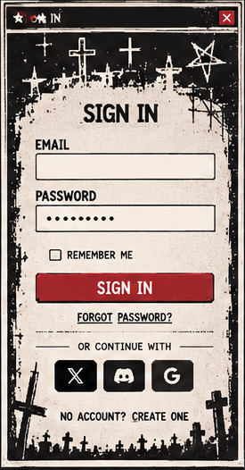
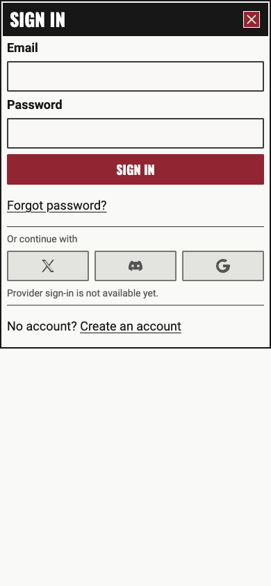
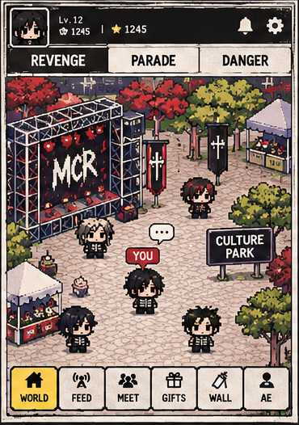
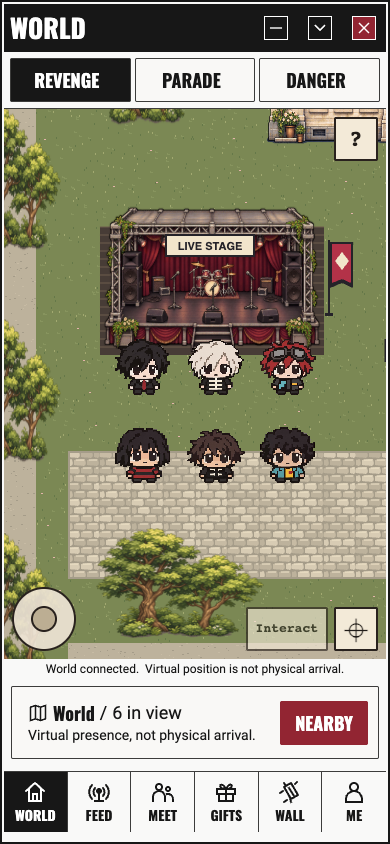
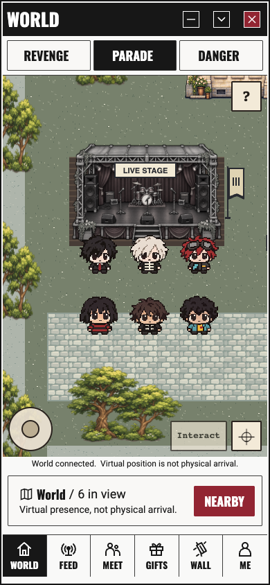
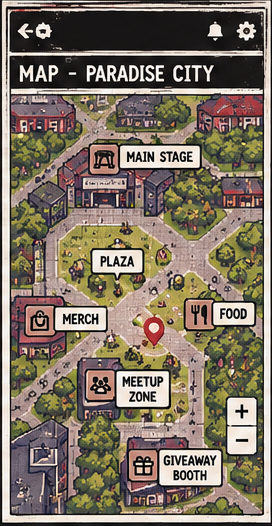
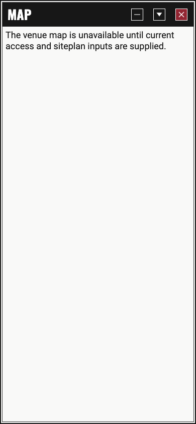
reviewed siteplan + landmark provider not composed in this fixture
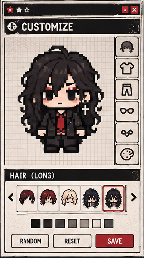
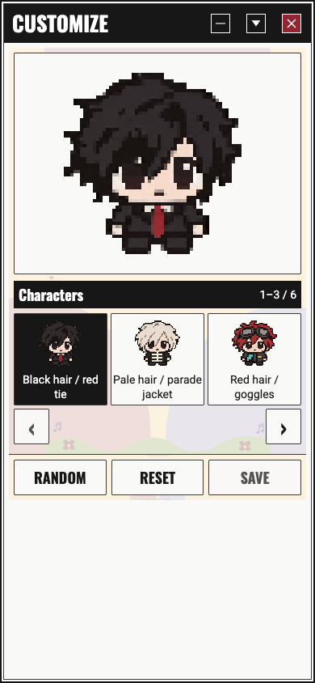
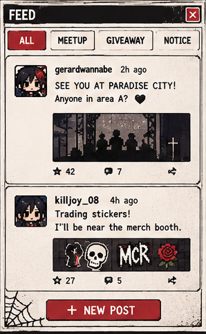
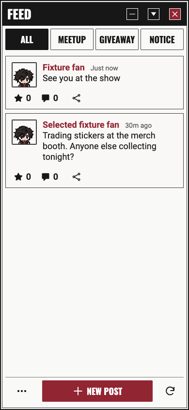
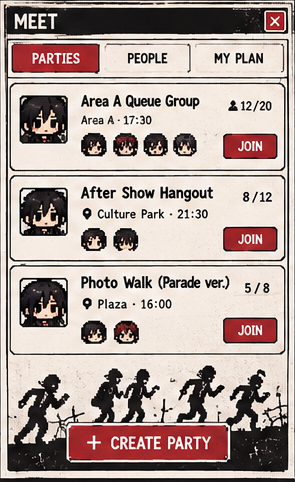
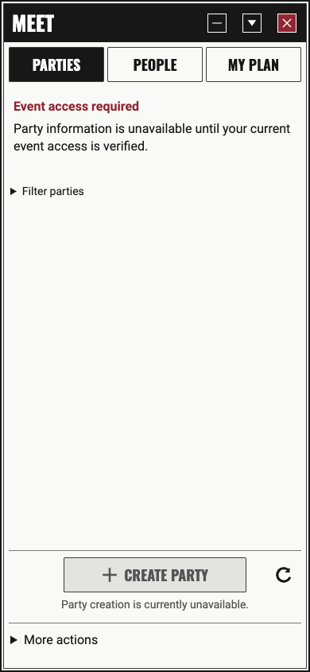
community clock/entry authority not composed; gift and party data cannot be admitted
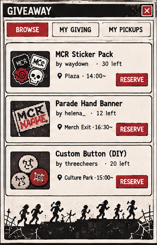
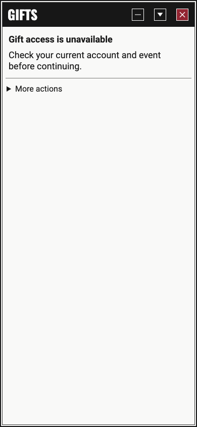
community clock/entry authority not composed; gift and party data cannot be admitted
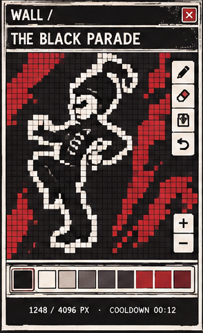
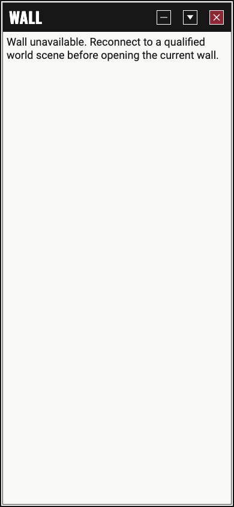
qualified world mural-scene release/anchor not composed
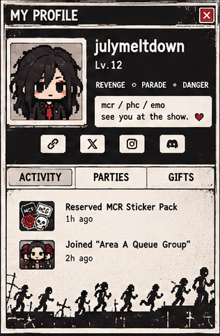
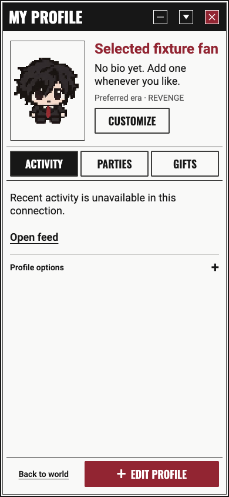
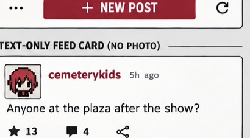

Reference originals are unchanged. Crops are developer-measured and keep the original aspect; no nonuniform scaling.